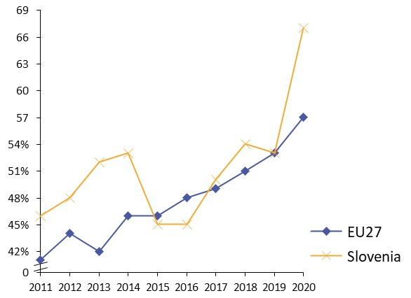
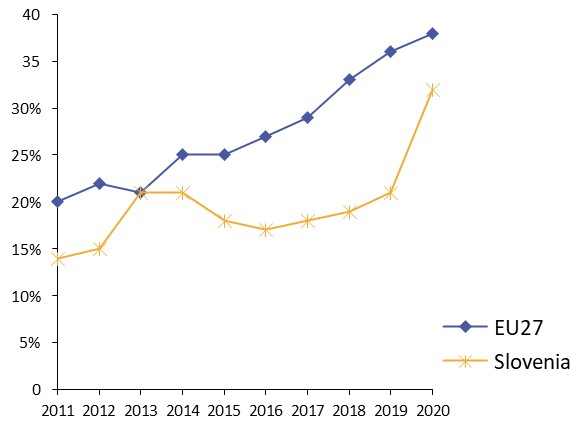
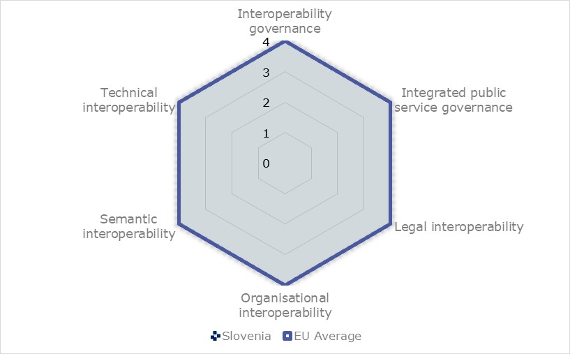
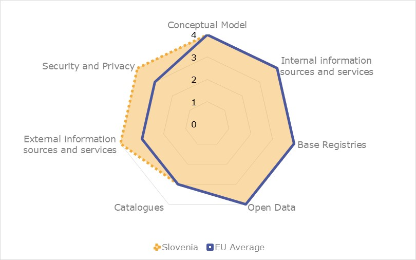
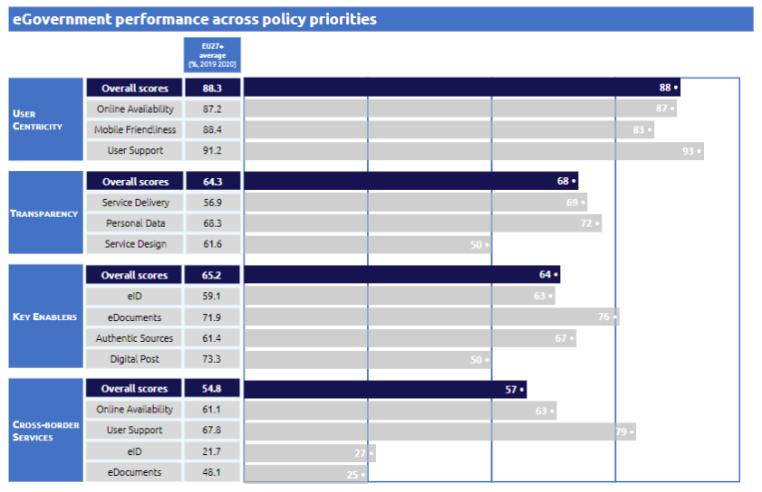
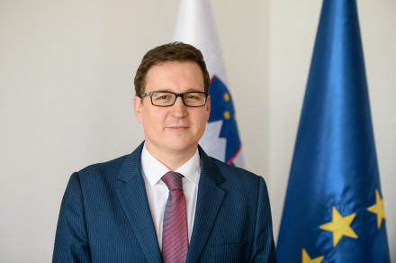
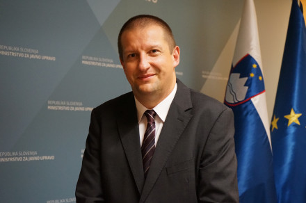

Digital Public Administration factsheet 2021
Slovenia
2 Digital Public Administration Highlights 10
3 Digital Public Administration Political Communications 13
4 Digital Public Administration Legislation 20
5 Digital Public Administration Governance 28
6 Digital Public Administration Infrastructure 40
7 Cross border Digital Public Administration Services for Citizens and Businesses 58
Please note that the data collection exercise for the update of the 2021 edition of the Digital Public Administration factsheets took place between March and June 2021. Therefore, the information contained in this document reflects this specific timeframe.
Country
Profile
1
Population: 2 102 419 inhabitants (2020)
GDP at market prices: 46 297.2 million Euros (2020)
GDP per inhabitant in PPS (Purchasing Power Standard EU 27=100): 89 (2020)
GDP growth rate: -5.5% (2020)
Inflation rate: -0.3% (2020)
Unemployment rate: 5% (2020)
General government gross debt (Percentage of GDP): 80.8% (2020)
General government deficit/surplus (Percentage of GDP): -8.4% (2020)
Area: 20.3 km²
Capital city: Ljubljana
Official EU language: Slovenian
Currency: Euro
Source: Eurostat (last update: 19 July 2021)
The following graphs present data for the latest Digital Public Administration Indicators for Slovenia compared to the EU average. Statistical indicators in this section reflect those of Eurostat at the time the Edition is being prepared.
Percentage of individuals using the internet for interacting with public authorities in Slovenia  | Percentage of individuals using the internet for obtaining information from public authorities in Slovenia
| ||
Percentage of individuals using the internet for downloading official forms from public authorities in Slovenia
| Percentage of individuals using the internet for sending filled forms to public authorities in Slovenia  | ||
In 2017, the European Commission published the European Interoperability Framework (EIF) to give specific guidance on how to set up interoperable digital public services through a set of 47 recommendations. The picture below represents the three pillars of the EIF around which the EIF Monitoring Mechanism was built to evaluate the level of implementation of the EIF within the Member States. It is based on a set of 71 Key Performance Indicators (KPIs) clustered within the three main pillars of the EIF (Principles, Layers and Conceptual model), outlined below.

Source: European Interoperability Framework Monitoring Mechanism 2020
For each of the three pillars, a different scoreboard was created to breakdown the results into their main components (i.e. the 12 principles of interoperability, the interoperability layers and the components of the conceptual model). The thematic areas are evaluated on a scale from one to four, where one means a lower level of implementation and 4 means a higher level of implementation. The graphs below show the result of the second EIF Monitoring Mechanism data collection exercise for Slovenia in 2020.

Source: European Interoperability Framework Monitoring Mechanism 2020
Slovenia’s results in Scoreboard 1 show an overall good implementation of the EIF principles. Slovenia meets the European average for every principle, except for Principle 3 (Transparency) which obtains a score of 3 and for Principle 12 (Assessment of Effectiveness and Efficiency), which exceeds the European average with a maximum score of 4. The upper middle performance on the third principle represents an area of improvement for Slovenian public administrations to enhance internal visibility and to provide external interfaces for European public services by enhancing the online availability and accessibility of the administrative procedures.

Source: European Interoperability Framework Monitoring Mechanism 2020
The Slovenian results for the implementation of interoperability layers assessed for Scoreboard 2 show an overall good performance. Slovenia reaches a maximum score of 4, in line with the European average, for all interoperability layers. To maintain this high performance, a potential area of improvement could be to enhance the implementation of two recommendations linked to interoperability governance, Recommendation 22, on considering relevant EU recommendations and to seek to make the approach consistent across borders, and Recommendation 23, which addresses the consultation of relevant catalogues of standards, specifications and guidelines at national and EU level, in accordance with their National Interoperability Frameworks (NIFs), when procuring and developing ICT solutions.

Source: European Interoperability Framework Monitoring Mechanism 2020
Slovenia’s scores assessing the Conceptual Model in Scoreboard 3 show a good performance in the implementation of all recommendations. In line with the European average, Slovenia gets a maximal score of 4 for open data, base registries, internal information sources and services and Conceptual Model and an upper middle score of 3 for catalogues. Higher than the European average, Slovenia obtains a maximal score of 4 for both external information sources and services and for security and privacy. In order to reach a higher performance in catalogues, a potential area of improvement could be to enhance the implementation of Recommendation 44, on the provision of catalogues of public services, public data, and interoperability solutions and the use of common models for describing them.
Additional information on Slovenia’s results on the EIF Monitoring Mechanism is available online through interactive dashboards.
The graph below presents the main highlights of the latest eGovernment Benchmark Report, an assessment of eGovernment services in 36 countries: the 27 European Union Member States, as well as Iceland, Norway, Montenegro, the Republic of Serbia, Switzerland, Turkey, the United Kingdom, Albania and Macedonia (referred to as the EU27+).
The study evaluates online public services on four dimensions:
The 2021 report presents the biennial results, achieved over the past two years of measurement of all eight life events used to measure the above-mentioned key dimensions. More specifically, these life events are divided between six ‘Citizen life events’ (Career, Studying, Family life, measured in 2020, and Starting a small claim procedure, Moving, Owning a car, all measured in 2019) and two ‘Business life events’ (Business start-up, measured in 2020, and Regular business operations, measured in 2019).

Source: eGovernment Benchmark Report 2021 Country Factsheets

Digital Public Administration Highlights
2
Digital Public Administration Political Communications
A new strategy, called Digital Slovenia 2030, is in preparation and should be adopted by the end of 2021 or at the start of 2022. This strategy will succeed the Digital Slovenia 2020 and it shall aim at: Digital inclusion, Digital public services, ICT infrastructure (gigabyte infrastructure), Society 5.0. (IoT, AI, smart cities and villages, data economy) and Cyber security. In addition to this topic, this strategy shall also address support environment (EDIH, administrative burdens, digital rights, innovation). As this strategy is still in preparation, some changes are possible.
In March 2021, the Slovenian Government adopted the National Cyber Incident Response Plan (NCIRP) prepared by the Information Security Administration, which unifies cyber incident management procedures and provides guidelines for a coordinated response for all involved stakeholders. NCIRP operationalises the procedures set out in the Information Security Act.
Digital Public Administration Legislation
Slovenia continues the preparation of a new law in the area of electronic identification and trust services, which will align the national legislation with the new Regulation (EU) No 910/2014 on electronic identification and trust services for electronic transactions in the internal market (eIDAS Regulation). In 2020, the law was finalized through several steps of inter-ministerial coordination. The adoption of the new law is envisioned for late 2021. It will introduce the electronic identity that will be issued on different electronic identification means. It is planned that Slovenian citizens will be able to use their new identity cards as electronic identification means starting in 2022.
Digital Public Administration Governance
The Government of the Republic of Slovenia established in April 2021 a Strategic Council for Digitalisation, as an advisory body to the Prime Minister. The Strategic council for Digitalisation is complementary with the Council for Informatics Development in Public Administration and together they will form strong strategic framework for the digitalisation.
The Government established the Government Office for Digital Transformation that started operating on 1 August 2021 with the aim to accelerate digital transformation of the country by monitoring and analysing the process of digital transformation at the state level and in individual regions, drawing up strategic national documents and policies related to digital transformation, and coordinating and monitoring their implementation.
The Government Information Security Office, which succeeded the Information Security Administration of the Republic of Slovenia, was established on 20 July 2021 and became operational on 31 July 2021. The Government Information Security Office is the competent national authority in the field of information and cyber security. Its core mission is to increase resilience to cyberthreats that can threaten individuals, businesses, the government and society at large.
Digital Public Administration Infrastructure
The Central Registry of Patient Data as enhanced to support COVID-19 screening. Not only are all test results duly reported in CRPD, but also SMS notifications of test results are provided. Moreover, a sound eHealth infrastructure facilitated long awaited digitisation of communicable disease registries and epidemiology services. Essential digital tools have been provided for public health authorities and policy makers.
In November 2020, a new central service was introduced to cover the e-delivery of the official documents to the citizens and between public institutions. More than 100 public institutions can electronically deliver documents according to the Administrative procedure legislation. Citizens are required to activate the secure mailbox within their personal space within the main citizens' e-Government Portal eUprava.
In January 2020, an important new functionality "electronic sick leave" was introduced on the business portal SPOT (formerly eVEM), which significantly reduced administrative burden, The portal was visually redesigned in January 2021, which unified the user experience and at the same time improved the stability of the portal.
Skrinja – data warehouse and Business Intelligence System/Skrinja (chest) - was developed as a data service for government agencies including data warehouse and business intelligence (BI) to support efficient interactive insight into real-time data and forecasting analytics for data driven decision making.

Digital Public Administration Political Communications
3
Berlin Declaration on Digital Society and Value-Based Digital Government
In December 2020, the Slovenian government signed the Berlin Declaration on Digital Society and Value-Based Digital Government, thus re-affirming its commitment – together with other EU Member States – to foster digital transformation in order to allow citizens and businesses to harness the benefits and opportunities offered by modern digital technologies. The Declaration aims to contribute to a value-based digital transformation by addressing and strengthening digital participation and digital inclusion in European societies.
Digital Slovenia 2020 - Development Strategy for the Information Society
At the beginning of 2016, the government of the Republic of Slovenia adopted the long-term Digital Slovenia 2020 - Development Strategy for the Information Society. The detailed objectives of this strategy included:
The strategy’s vision calls on Slovenia to take advantage of the development opportunities of ICT and the internet, thus becoming an advanced digital society and reference environment for the deployment of innovative approaches in the use of digital technologies at a systemic level. At the same time, a high level of protection of personal data and communication privacy in a digital society should be ensured. This will create trust and confidence in digitalisation and the cyberspace.
The government favours investments in the digitalisation of entrepreneurship, an innovative data-driven economy, the development and use of the internet, as well as smart communities, cities and homes. Within these limits, it favours research on and technology development of the Internet of Things, cloud computing, Big Data and mobile technologies. Because the government wishes to enable equal integration into the European Digital Single Market for Slovenian stakeholders, it uses ICT and the internet innovatively in all development areas. In the future, it will invest in education to promote digital society.
Currently this is still the only valid strategy for this field. However, we have to stress that the new strategy for the information society is under preparation. The new strategy will cover the following domains:
Any further details are currently unavailable as they are still under negotiation, but the new strategy, called Digital Slovenia 2030, shall be adopted by the end of 2021.
Public Administration 2020 – Slovenian Public Administration Development Strategy 2015-2020
The main purpose of the Slovenian Public Administration Development Strategy is to create a platform for a real improvement in the operations of Slovenia’s public administration, which is about to undergo modernisation and renewal. Reform will be achieved by introducing a comprehensive management system through centralised strategic planning, while ensuring quality control systems for the simplification and modernisation of administrative processes, as well as monitoring and evaluating the work done and the targets to be achieved across all levels. Effective public administration cannot be achieved without efficient government IT. Improving the state of ICT in public administration will have significant synergistic effects in achieving other strategic targets, as well as in the development of the information society as a whole.
Data governance is a prerequisite for data driven developments, operations, decisions, and innovative approaches. In this context, a set of actions was put in place. The development of a central metadata dictionary is a priority and is also the prerequisite for a data repository. A data repository will provide views with different perspectives and contexts, which will be the root for the knowledge and understanding of the data. The repository will provide information on how applications are connected to the data, what institutions are responsible for the data, and how data is used through public administration procedures.
In the context of the Slovenian Public Administration Development Strategy 2015-2020, which also covered the Digital Government Strategy, the government adopted an action plan every two years. Currently, this is still the only valid strategy for this field. However, we have to stress that a Digital Public Services Strategy is under preparation. It will also be part of the 2030 Digital Slovenia Strategy. The new strategy will cover:
Any further details are not available at the moment as they are still under negotiation, but the new strategy shall be adopted by the end of 2021.
Semantic Interoperability Implementation Strategy
In 2018, the Semantic Interoperability Implementation Strategy was adopted. With the help of tools and procedures defined in the strategy, we intend to address the following areas:
Centralisation of government IT, which was completed in 2018, is well on the way and represents the implementation of established daily procedures among public administration organs. However, experience with the pandemic has shown the need for further digitalisation in all areas, including public administration, as digital public administration is a prerequisite for an agile response to change and efficient provision of services to both citizens and businesses.
Slovenia chose to focus the allocation of its resources on:
For the future development, the Slovenian government confirms its political commitment towards ensuring high quality, user-centric and seamless cross-border digital public services for citizens and businesses, ensuring that they are inclusive of and accessible also for persons with disabilities. The cooperation will continue between government, citizens, businesses, academia and civil society, gradually increasing the level of co-design with the end users. The government will encourage the use of AI and other novel technologies to improve the well‑being of the citizens, always paying attention to the fundamental rights. As other members of the European Union, Slovenia is now preparing a Resilience and Recovery Plan, focusing on the component of the digital transformation of the public sector and public administration, which will provide an appropriate response to the critical shortcomings in the public sector digitisation that were revealed (even more clearly) during the COVID-19 epidemic, such as: insufficient range, availability or quality of eServices, insufficient and outdated IT equipment, insufficient network connection capacity and IT infrastructure, which turned out to be particularly problematic in the light of the increased volume of digital business.
The component envisages six reforms:
National Interoperability Framework
The National Interoperability Framework (NIO) Portal is a cornerstone of interoperability and a basic tool for publishing, monitoring, and using interoperability products. The Slovenian National Interoperability Framework represents a metadata framework for the coordinated development of public sector eServices. On the NIO Portal, system specifications and documentation are available together with standards, recommendations, interoperability products, data access services, organisational rules, interoperability infrastructure and building blocks.
The NIO’s Editorial Board, a group of IT experts from various fields, are involved in the publication and monitoring of interoperability products working process on the NIO Portal. The editorial team tied to the implementation of an individual field an agreed set of contents for the efficient and effective joint implementation of interoperable public services. The remit of the NIO Editorial Board includes the national interoperability framework, education, awareness raising activities, the promotion of the NIO with wide international collaboration and the cooperation in the field of interoperability and integrated digital solutions. An important and continuous task of the Board is to raise awareness on the importance of interoperability and the establishment of DIF, NIF and EIF.
No political communication has been adopted in this field to date.
Contents related to eID and trust services will be included in the Digital Public Services Strategy which is under preparation (see chapter 3.1).
Cybersecurity Strategy
The current Cybersecurity Strategy was the first step in establishing the framework for ensuring national cybersecurity on a higher level. The Republic of Slovenia will provide an open, safe and secure cyberspace, which will serve as the basis for smooth functioning of the infrastructure relevant for State authorities and the economy, as well as the lives of all citizens. Rapid development of ICTs in a modern society is beneficial on one hand but, on the other, it determines the emergence of new and more technologically sophisticated cyberthreats. There is a growing trend in using ICT for political, economic and military pre‑eminence. Cyberattacks have become a major security threat to the contemporary world. Consequently, cybersecurity has become an important and integral part of national security.
With the adoption of the Information Security Act, the real basis for strengthening the national cybersecurity system was set. The Information Security Administration was established within the Ministry of Public Administration with a clear mission of increasing resilience to cyberthreats. With the Information Security Act the role of a national CSIRT was taken over by a well-established SI-CERT and a new State Administration CSIRT (Government CERT) was established too. With all these new developments, achieving the goals set by the Cybersecurity Strategy has become realistic. In late 2020, the Information Security Administration started with the preparation of a new Cybersecurity Strategy, which is expected to be adopted in September 2021.
In March 2021, the Slovenian government adopted the National Cyber Incident Response Plan (NCIRP) prepared by the Information Security Administration, which unifies cyber incident management procedures and provides guidelines for a coordinated response for all involved stakeholders. The NCIRP operationalises the procedures set out in the Information Security Act.
No political communication has been adopted in this field to date.
No political communication has been adopted in this field to date.
No political communication has been adopted in this field to date.
Blockchain Action Plan
In May 2018, Slovenia adopted the Blockchain Action Plan to lay the groundwork for an accelerated implementation in the use of blockchain technologies. The main activities foreseen in the action plan were:
Use cases are implemented by the blockchain ecosystem in Slovenia, which is represented by the Blockchain Think Tank and other communities. The main purpose of Blockchain Think Tank Slovenia, under the Slovenian Ministry of Economic Development and Technology, is to act as a bridge between the public and the private sector and serve as a platform for gathering all possible knowledge on blockchain technology in one place.
SI-Chain – National blockchain test infrastructure
Slovenia launched the National Blockchain Test Infrastructure SI-Chain to enable the testing of existing and new blockchain applications for both the public and private sectors. Still in the test phase, the blockchain solution allows transactions and the possibility to create smart contracts.
National Strategy for Artificial Intelligence
The Ministry of Public Administration has been drafting a National Strategy for Artificial Intelligence. A working group was formed consisting of representatives of various ministries and government departments. External stakeholders include the Slovenian Digital Coalition, the Slovenian Society for Artificial Intelligence, Slovenia’s Digital Ambassador, the Chamber of Commerce and Industry of Slovenia, the Strategic Research and Innovation Partnerships (SRIP PMiS - Smart Cities and Communities and SRIP ToP - Factories of the future), the Jožef Stefan Institute, the Faculty of Computer and Information Science of the University of Ljubljana and others).
The working group’s tasks include:
 Examining the state of artificial intelligence in the country;
Examining the state of artificial intelligence in the country;The vision of the programme is to upgrade the achievements in this field and become internationally known for these competencies and this knowledge on AI technologies, with a human-centric approach. The programme shall focus on the innovation cycle and actions are foreseen on:
The working group has finalised the strategy (draft version), which was adopted by the Slovene government at the end of May 2021. It will soon be published on the gov.si website.
International Research Centre on Artificial Intelligence under the Auspices of UNESCO
The Slovenian government’s proposal to establish an International Research Centre on Artificial Intelligence under the auspices of UNESCO (IRCAI) was confirmed and adopted during the 40th session of the UNESCO General Conference in November 2019 – unanimously and with huge support from all UNESCO Member States. After a long ratification process for the agreement due to the COVID-19 crisis, the IRCAI was formally and officially established on 2 October 2020.
The purpose of the IRCAI is to provide an open and transparent environment that, in addition to research, technology and discussions in the field of artificial intelligence, will provide stakeholders worldwide with public policy support for the development of artificial intelligence orientations and action plans. The IRCAI provides governments, (international) organisations, legal entities, other institutions and the general public with appropriate professional support for systemic and strategic solutions in the deployment of artificial intelligence in various fields. It assists in developing and expanding capabilities in a variety of ways, including setting up ancillary research centres around the world, developing training and global awareness programmes and creating a network for research and knowledge exchange.

Digital Public Administration Legislation
4
The State Administration Act (Official Gazette of the Republic of Slovenia No. 113/05 – official consolidated text, 89/07 – odl. US, 126/07 – ZUP-E, 48/09, 8/10 – ZUP-G, 8/12 – ZVRS-F, 21/12, 47/13, 12/14, 90/14, 51/16 and 36/21), adopted in 2005 and amended several times, authorises the Ministry of Public Administration to manage information and communication systems of the State administration, and to develop common information solutions and their technological, process and organisational compliance with the central information and communication system, implementing a unified information security policy and planning. The Ministry of Public Administration provides central information and communication system services, electronic support for administrative and other procedures and the development of joint information solutions for the electronic operations of State bodies, public agencies, local community bodies and public authorities.
General Administrative Procedures Act
The General Administrative Procedures Act (Official Gazette of the Republic of Slovenia, No. 24/2006-ZUP-UPB2, 105/06-ZUS-1, 126/07, 65/08, 8/10, 82/13 and 175/20 – ZIUOPDVE - Act on Epidemic Intervention Measures), adopted in 1999 and amended several times, provides the general legal basis for all administrative proceedings: Administration-to-Citizen (A2C) and Administration-to-Business (A2B) interactions together with a major portion of Administration-to-Administration (A2A) relations. One of the main provisions of the act and its Decree on Administrative Operations (Official Gazette of the Republic of Slovenia, No. 9/18, 14/20 and 167/20) allow for a two-way electronic communication between public administration and citizens. Prior to the enforcement of this provision, citizens could submit digitally signed eDocuments to the eGovernment State Portal, but the administration would only respond in writing via regular mail. Official electronic answers, or eDeliveries, acquired legal status after the 2004 amendment of the act. The organisational and technical setup for eDeliveries was established at the end of 2020.
Infrastructure for Spatial Information Act
The Infrastructure for Spatial Information Act defines the interoperability of spatial data sets and services in its Articles 8, 10, 11 and 12. It defines interoperability as the ability to combine spatial data sets for services to interact, without any manual intervention, in such a way that the result is coherent, and the added value of the spatial data sets and services is enhanced. The interoperability of spatial data sets and spatial data services shall be provided by the administrators. The interoperability shall ensure links between different spatial data that refer to the same location, and between the same spatial data that refer to the same spatial object when represented at different scales. Information for the implementation and provision of the interoperability of spatial data sets and services, including data, codes and technical arrangements, shall be available free of charge to public law entities and third parties through the Spatial Data Geoportal.
Access to Public Information Act
The legal basis for the proactive publication of information and data on the web by public sector bodies was provided for by the Access to Public Information Act (Official Gazette of the Republic of Slovenia No. 51/06, 117/06 – ZDavP-2, 23/14, 50/14, 19/15, 102/15 and 7/18). The act regulates the open and transparent functioning of the public sector and the reuse of public sector information. In principle it provides that all generally accessible public information is reusable (in line with the reuse right from the PSI Directive). The law places the emphasis on the online publication of entire databases/public sector open data (i.e. data in open, machine-readable formats for further reuse by citizens, non-governmental organisations, media, etc.).
Regarding public sector databases, special attention is paid to database management by public administration bodies and to the connectivity between databases in order to provide simple and straightforward data access:
Apart from the legal framework, several activities have been announced in this field (hackathons, guidelines, renewal of the Open Data Portal, etc.). In addition, it is important to emphasise that in principle all documents (electronic or not) produced by public bodies are publicly available on the basis of a request after a legal review by the institution. The Information Commissioner acts as a strong supervisory body whose decisions are fully binding upon public sector institutions.
Accessibility of Websites and Mobile Applications Act
The Accessibility of Websites and Mobile Applications Act regulates the measures to ensure the accessibility of public sector websites and mobile applications, providing accessibility for all users, in particular for those with disabilities (sensory or mobility impairment and mental disorders). The act is only available in Slovene. Additional information is available via the NIO Portal.
National Legislation Related to eIDAS (under preparation)
The preparation of the Electronic Identification and Trust Services Act continues. It will align national legislation based on the eSignature Directive (1993/93/EC) with Regulation (EU) No. 910/2014 on electronic identification and trust services for electronic transactions in the internal market (eIDAS Regulation). In 2018 and 2019, the Ministry of Public Administration, which is responsible for drafting new legislation, gathered different views and feedback from stakeholders interested in electronic identification. In 2020, the law was finalised through several steps of inter-ministerial coordination. The adoption of the new law is envisioned for Q3 of 2021. It will introduce electronic identity that will be issued through different electronic identification means. According to the plans, Slovenian citizens will be able to use their new identity cards as electronic identification means starting in 2022. At the same time, mobile based identification means will be further developed.
The activities regulated by the eIDAS Regulation in the area of trust services, such as the certification of qualified trust service providers, are regularly performed. Currently, all activities in the area of trust services are operational and aligned with the requirements of the eIDAS Regulation.
Following Directive (EU) 2016/1148 (NIS Directive), the Information Security Act regulates information security and the measures for achieving a high level of security of network and information systems in the Republic of Slovenia, which are crucial for the smooth functioning of the State in any security situation and which provide essential services for the preservation of key societal and economic activities.
It stipulates the minimum security requirements and the incidents notification requirements for the subjects obliged to comply with the act. Furthermore, it regulates the competences, duties, organisation and operation of the National Competent Authority for Information Security and the Single Point of Contact (which are both part of the Information Security Administration), the National Cybersecurity Incident Response Centre (National CSIRT) and the State Administration Cybersecurity Incident Response Centre (State Administration CSIRT).
General Data Protection Regulation
The General Data Protection Regulation (GDPR) was adopted on 27 April 2016 and entered into force on 25 May 2018. It is legally binding in its entirety and directly applicable in all Member States, including the Republic of Slovenia.
Personal Data Protection Act
In 2020, the Personal Data Protection Act (Official Gazette of the Republic of Slovenia No. 94/07), which transposed EU Directive 95/46/EC on data protection into Slovenian law, was still in force. The Personal Data Protection Act still applied for personal data protection not covered by the GDPR. Pending the adoption of a new law on personal data protection in Slovenia, the Personal Data Protection Act is still in use for the processing of personal data in areas not covered by the GDPR (e.g. data of deceased persons) and in areas where the GDPR refers to the national law (especially for the processing of data by public sector bodies).
Renewal of the Identity Card Act
In view of the renewal of the Identity Card Act, pursuant to Regulation (EU) 2019/1157 of the European Parliament and of the Council of 20 June 2019 on strengthening the security of identity cards of Union citizens and of residence documents issued to Union citizens and their family members exercising their right of free movement, it was decided that Slovenia would introduce new identity cards according to the above regulation. The identity card will serve also as an eID card. The new Identity Card Act has already been adopted, whereas new legislation on eIdentities and trust services is expected to be adopted in Q3 of 2021.
Business Registry Legislation
The Law on the Business Registry of Slovenia regulates many aspects related to the management and maintenance of the Business Registry. It defines the units of the registry, its identification, the obligatory use of the content of the registry, how to obtain data for the management of the registry and the storage of documents. Other relevant pieces of legislation are the Rules on Shared Living in the Business Registry of Slovenia, the Regulation on Keeping and Maintaining the Business Registry of Slovenia, the Fees for the Reuse of Public Sector Information in the Business Registry of Slovenia and the Instructions on the Type and Extent of Data for a Particular Legal Form Unit of the Business Registry of Slovenia.
Land Registry Act
The Land Registry Act regulates the concepts to be used, and in particular the information system to support the digitalisation of the Land Registry and the relevant manager, the property data and legal facts to be included in the registry, and the basis for accountability. Other legislation to be considered includes the Rules on the Land Registry, the Decree on the Forms of Registration in the Land Registry, the Rules on the Electronic Exchange of Data Between the Land Registry and Cadastral Registry (Official Gazette of RS, No. 58/03, 34/08 - ZST-1, 45/08, 59/90 and 25/11), among others. The Rules on the Land Registry (amendment 13/2021) have equalized electronic business in land affairs with electronic business in judicial civil matters.
Spatial Data Information Act
The Infrastructure for Spatial Information Act regulates the establishment, management and maintenance of the infrastructure for spatial information in Slovenia as an integral part of the European infrastructure for spatial information. The act establishes and regulates the operation of a metadata system, provides for network services to access the data and their use, foresees the coordination in establishing the infrastructure for spatial information (ISI) and the use of this infrastructure. It also defines the individual public entities responsible for establishing, managing and using spatial data and services and their tasks. The tasks of a body in charge of national SDI are also defined. The latter must be provided as an integral part of the Slovenian and European infrastructure for spatial information.
Registries Regulated by the Real Estate Registration Act
The Real Estate Registration Act regulates different aspects related to the management and maintenance of the Land Cadastre, the Building Cadastre, the Registry of Administrative Units and Addresses, the State Border Registry and the Registry of Real Estate Data. All registries are defined as public registries. Key processes in the field of real estate registration and connection with other registers provide interoperability with a wide list of stakeholders. As such, they are precisely defined in the law. The Address Register is connected to the Business and Population Register (it is not allowed to register the personal residence or a company at a non-existent address; no-one can be an owner in the Real Estate Register without being registered in the Business or Population Register). For the purpose of data sharing and exchange, Article 117 defines the distribution environment within the framework of the State’s central information and communication infrastructure.
Population Registry
Concerning the Population Registry, the Law on Central Population Registry and the Law amending and supplementing the Law on the Central Population Registry set out the determination and use of personal identification numbers and the content of the Central Population Registry, together with data flow, control, maintenance, storage, and use. Other important pieces of legislation are the Instructions for the Electronic Central Population Registry, the Decree on the Operation and Maintenance of the Central Population Registry and the Procedure for Obtaining and Communicating Information to the Data Registry of the Population.
Vehicle Registry
As concerns the Vehicle Registry, the Law on Motor Vehicles sets out the conditions for the placement of motor vehicles and trailers on the market, their registration and operation on the road network, and in the performance of agricultural or forestry work, the conditions for carrying out such tasks as the technical services, the registration of organisations managing databases on vehicles, and the monitoring of the implementation of this law. The Rules on the Registration of Motor Vehicles set out the registration conditions to be met, the procedures for the registration of motor vehicles and trailers, the issuance and revalidation of transport permits, the deregistration of vehicles, the change of vehicle owner or user data, the issuance of permits for test drives, record-keeping obligations and the storage of documents and evidence.
Public Procurement Act
On 1 April 2016, a Public Procurement Act entered into force, which transposed Directive 2014/24/EU and Directive 2014/25/EU. On 1 November 2018, an amendment to the Public Procurement Act came in force. Its main objective was to further emphasise the importance of social aspects in public procurement procedures and public contract execution.
The Public Procurement Act lays down mandatory actions required of contracting authorities and tenderers in awarding public supply contracts, public service contracts and public works contracts. Among other provisions, the act sets out rules on mandatory publication of procurement notices in the Public Procurement Portal, on mandatory electronic submission and electronic communication in procurement procedures, on electronic verification of tenderers via official documents the information system eDossier, on the dynamic purchasing system and electronic auctions, thus also laying the groundwork for a public, State-developed eProcurement system called e-JN Information System. After the technological renovation at the end of 2018, the system combines functionalities that were originally developed as part of different stand-alone modules/applications (eSubmissions, eAuctions, eDossier, eCatalogue and eInternal procedures for public authorities).
Furthermore, the 2017 amendment to the Legal Protection in Public Procurement Procedures Act introduced an electronic information system for legal protection procedures in public procurement, i.e. the eRevision Portal. The eRevision Portal was established in September 2019 and enables the exchange of information and documents between contracting authorities, selected tenderers, the National Review Commission and other participants in the appeal proceedings. The eRevision Portal enables a widespread flow of information about the course of the review procedure. It communicates with the Public Procurement Portal to allow a smooth flow of information and documentation. This will significantly reduce the duration of the procedure and the administrative burdens and costs for the parties involved. The use of this portal is mandatory from 1 January 2021.
eInvoicing Legislation
In Slovenia, the competent authority with purview on eInvoicing is the Public Payments Administration of the Republic of Slovenia, attached to the Ministry of Finance.
Since 1 January 2015, public sector institutions have begun receiving electronic invoices for any goods and services. This function was based on the Provision of Payment Services to Budget Users Act (ZOPSPU-1).
The Public Payments Administration serves as a single entry and exit point for the exchange of eInvoices between administrations, and between public administration and external entities as well.
Amendment to the Healthcare Databases Act
By amending the Healthcare Databases Act in 2015, legal ground was provided for the eHealth system, enabling interoperability and the exchange of health data on a national level. Ever since, considerable progress has been made in terms of development, availability and use of eHealth. The Healthcare Databases Act was amended in 2018 to support cancer screening programmes and clinical registries. In 2020, the act was further amended in order to respond to the challenges of the COVID-19 epidemics and the related data processing requirements. The amendment provided legal ground for comprehensive digitalisation of communicable disease surveillance. Moreover, it facilitated the processing of health records for all persons receiving medical treatment in Slovenia, irrespective of their nationality, by means of enabling cross-border exchange of healthcare records within the Central Registry of Patient Data (CRPD).
Protection of Documents, Archives and Archival Institutions Act
The Protection of Documents, Archives and Archival Institutions Act and the accompanying Regulation on Documents and Archives Protection were both passed in 2006 to regulate the management of electronic content. The act states that all electronic records, including digitalised documents, have full legal status provided they comply with certain technical conditions. The accompanying regulation governs the activities and internal rules for individuals to keep documents and/or archives, the storage of such materials in physical and digital forms, the general conditions, the registration and accreditation of digital storage equipment and services, the selection and transfer of archives to public archival institutions, the processing and keeping of registers of archives, the protection of film and private archives, the use of archives in archival institutions and the work of the Archives Commission. The law also contains provisions regarding the long-term validity of eSignatures. Later amendments to the act took place in 2014.
This law eliminated the obligation of certifying internal rules for companies and public authorities at the Archives Commission and simplified the procedures for accreditation. It granted companies and other private organisations the power to decide, autonomously and without any State interference, the best method to store digital documents, leaving them the choice of the solutions and technologies to adopt.
Amendments to the Tax Procedure Act
With the 2016 amendments to the Tax Procedure Act (Official Gazette of the Republic of Slovenia, No. 13/11 - official consolidated text, 32/12, 94/12 , 101/13 - ZDavNepr, 111/13, 22/14 - US decision, 25/14 - ZFU, 40/14 - ZIN-B, 90/14, 91/15, 63/16, 69/17, 13/18 - ZJF-H, 36/19, 66/19, 145/20 - ex. US in 203/20 - ZIUPOPDVE), an electronic notification (eNotification) was implemented via the State tax platform portal eDavki. The eNotification is, in a similar manner to tax returns, obligatory for legal entities, individual sole traders and natural persons performing business activities (business entities). Since the adoption of this amendment, the eDavki Portal has been considered as a communication means for tax returns purposes and other applications, as well as for the service of documents between taxpayers and the Financial Administration of the Republic of Slovenia. Other natural persons may voluntarily register into the eNotification system.
The Tax Administration of the Republic of Slovenia enables, according to the Tax Procedure Act, a special tax platform, i.e. the eDavki Portal. The eDavki Portal is the Financial Administration Information System of the Republic of Slovenia, which is used for any electronic dealings with the financial administration. It provides a comfortable, easy and secure method for sending tax forms and receiving documents notified by the financial administration (electronic notification eVročanje). The use of the portal is free of charge.
Natural persons can enter the eDavki Portal in three ways:
The use of the portal (for submitting forms and receiving documents) is mandatory for business entities. They can access the eDavki Portal with a qualified digital certificate.
No legislation has been adopted in this field to date.

Digital Public Administration Governance
5
Ministry of Public Administration
The Ministry of Public Administration deals with policies and strategies regarding eGovernment and administrative processes, information society and electronic communications. Established in December 2004, the Ministry pursues the objective of orienting public administration towards up-to-date, user‑friendly solutions and services. The reform of administrative processes for eGovernment is the responsibility of the Ministry’s Informatics Directorate.
 Photo: Nebojša Tejić, STA | Boštjan Koritnik Minister of Public Administration Contact details: Ministry of Public Administration Tržaška cesta 21, SI-1000 Ljubljana Tel.: +386 1 478 83 99 E-mail: gp.mju@gov.si |
Government Office for Digital Transformation
The Government Office for Digital Transformation that started operating on 1 August 2021 is the main actor in coordinating digital transformation of Slovenia. The Office monitors and analyzes the process of digital transformation at the state level and in individual regions, draws up strategic national documents and policies related to digital transformation, and coordinates and monitors their implementation. Other tasks include preparing and coordinating the measures of institutions at the national level related to the digital transformation policy, as well as monitoring and coordinating their implementation, and preparing and implementing key national projects in accordance with the national digitalization strategy to improve digital indicators.
Photo: UKOM | Mark Boris Andrijanič Minister for Digital Transformation Contact details: Office of the Government of the Republic of Slovenia for Digital Transformation Gregorčičeva ulica 25, SI-1000 Ljubljana E-mail: gp.sdp@gov.si |
Government Information Security Office
The Government Information Security Office, which succeeded the Information Security Administration of the Republic of Slovenia, was established on 20 July 2021 and became operational on 31 July 2021. The Office is the competent national authority in the field of information and cyber security. Its core mission is to increase resilience to cyberthreats that can threaten individuals, businesses, the government and society at large.
The Government Information Security Office connects stakeholders in the national information security system and coordinates the operational capabilities of the system at strategic level. Under the Information Security Act (ISA), the Office pays special attention to a group of essential service providers (in the fields of energy, digital infrastructure, drinking water supply and distribution, healthcare, transport, banking, financial market infrastructure, food supply and environmental protection), a group of digital service providers and a group of State administration authorities.
The Government Information Security Office is also the single point of contact to ensure cross-border cooperation with the relevant authorities of other EU Member States and with the European CSIRT Network and for other international cooperation tasks. Through its own inspection service, it oversees the implementation of the ISA. The Office will also establish the State Administration Cybersecurity Incident Response Centre (State Administration CSIRT or Government CERT) as its internal unit until 1 January 2022.
The Government Information Security Office is strategically placed within the Slovenian national security system and is tasked with notifying the government and the National Security Council (NSC) in the case of a critical incident or cyberattack.
 | dr. Uroš Svete Acting Director of the Government Information Security Office Contact details: Government Information Security Office Šmartinska cesta 152, SI-1000 Ljubljana, Slovenia E: gp.uiv@gov.si W: www.uiv.gov.si/en/ |
The Slovenian Ministry of Public Administration strives to establish a kind, efficient, and modern public administration, one which will provide citizens and businesses with efficient and high-quality public services. To achieve this, the Ministry is responsible for measures and improvements which follow the 2020 Public Administration Development Strategy. The measures encompass a reorganisation of the public administration to improve efficiency and effectiveness, procedural simplification, increase of public administration transparency and openness, zero tolerance of corruption and strengthening of integrity, effective local self-government, and digitalisation of public administration.
The Ministry also coordinates and promotes eGovernment initiatives and developments across government institutions, for example interoperability activities (e.g. the NIO Portal), inter‑ministerial projects on eServices and eApplications. It provides support to all users within the State administration and, more broadly, through the Single Contact Centre.
Furthermore, the Informatics Directorate is tasked with the responsibility of developing the cloud framework and eServices useful for the State, the citizens and the economy, as well as with issuing digital certificates, implementing a unified IT security policy, and IT and data management solutions. In this respect, it provides citizens and businesses with an effective, reliable and easy access to eServices at the national level and in the Digital Single Market.
Information Society Directorate
The Information Society Directorate is responsible for the strategic planning and promotion of the digital transformation of Slovenia, and the functioning of the national communication network. A key document for its work is the Digital Slovenia Strategy 2020, which is currently being updated.
The Informatics Directorate coordinates the implementation of measures to promote the general digitalisation of society at inter-ministerial and inter-sectoral levels. In this process, the coordination with external stakeholders in the business sector and non‑governmental organisations, as well as with stakeholders in education and research, takes place also through the Slovenian Digital Coalition. Within its area of competence, the Directorate represents the Republic of Slovenia in international organisations (EU, OECD, ITU, ICANN, IGF, CEPT and Eutelsat). In the areas of electronic communications and radio spectrum management, the Directorate is responsible for the Agency for Communication Networks and Services.
Council for Informatics Development in Public Administration
The highest decision-making authority tasked with monitoring and directing the implementation of the Action Plan is the dedicated Council for Informatics Development in Public Administration, composed of State secretaries of the most relevant ministries and other public institutions. The Council is currently not working at full capacity. The Informatics Directorate assesses materials and issues recommendations in the form of non‑mandatory technical opinions.
Activities are currently underway to re-establish the Council for Informatics Development in Public Administration, which is also one of the key enablers in the Resilience and Recovery Plan.
Secretariat-General of the Government of the Republic of Slovenia
The Secretariat-General of the Government of the Republic of Slovenia is primarily responsible for conducting the sessions of the government, its working bodies, expert councils and other governmental bodies, and for monitoring the implementation of decisions adopted by the government and the obligations undertaken by or imposed on it.
One of the key tasks of the Secretariat-General is to ensure the smooth operation of information systems whose primary function is to support the decision-making processes. Electronic services and systems developed for this purpose facilitate the harmonisation of documents at different levels and the provision of information on government decisions to various target user groups and to the public.
Division for the Administrative Burden Reduction, Better Regulation and Quality in Public Administration
The Division for the Administrative Burden Reduction, Better Regulation and Quality in Public Administration, which is under the responsibility of the Ministry of Public Administration, seeks to improve regulations that are essential to creating a high-quality regulatory environment. Recognising the importance of introducing innovative approaches in State administration bodies, the Division promotes creativity, agile approaches, the involvement of stakeholders, the co-development of services and the testing of services with stakeholders, and regularly monitors user experiences. Efficiency and quality are promoted through the Inovativen.si Project whose main objectives are the uptake of innovative approaches and innovative methods of work by employees in the public administration.
The Resolution on Legislative Regulation gives the government a political commitment to respect the principles of good regulation and to involve the public in the process of formulating new policies or in the process of drafting new regulations. The resolution sets out the basis and principles for drafting regulations, as well as guidelines for conducting an impact assessment and cooperating with expert groups and other stakeholders.
The Rules of Procedure of the government of the Republic of Slovenia and the Instruction No. 10 for the implementation of the provisions of the Rules of Procedure of the government of the Republic of Slovenia pay special attention to public participation, to the publication of materials on websites and to preliminary inter‑ministerial coordination. It is stipulated that the public should be able to participate in the preparation of the regulation within 30 to 60 days from the date of publication.
Additionally, Article 7 of the implementing regulation, the Decree on Communication and Reuse of Public Sector Information, provides that official bodies must publish draft regulations, programmes, strategies and other documents on the internet for purposes of public announcement and consultation with the public and key stakeholders, and that regarding the method and deadlines, the provisions of the resolution governing regulatory activities and the government’s Rules of Procedure should be applied mutatis mutandis.
Ministries publish draft regulations and other acts that are published in the Official Gazette of the Republic of Slovenia on the single national designated eDemocracy Portal. Open and inclusive policy making builds upon the idea of designing policies by broadening the evidence base. For this reason the Service has prepared an innovative web‑based tool called SME Test that enables the public (citizens, business entities, economic and other interest groups) to substantiate their comments and proposals on a public policy proposal and, in addition, to quantify the impact of their alternative policy proposals. The test is mandatory since January 2017. The public can thus access the tool through the eDemocracy Portal that enables citizens to actively cooperate and take part in the decision-making process. The most important part is the opportunity to influence the drafting of regulations by expressing opinions and sending proposals and comments on regulation drafts to those who are preparing them and to the final decision makers.
In July 2019, the Action Plan for Better Regulation was adopted by the government of the Republic of Slovenia with the aim of systematically regulating better regulation. The key result of the action plan will be the setting-up of the MOPED System (a modular IT system for eDocuments). The application operates within the government network and is not accessible to the outside public.
ICT Association (ZIT) at the Chamber of Commerce and Industry
The Information Society and Informatics Directorate at the Ministry of Public Administration works closely with the ICT Association of Slovenia (ZIT) at the Chamber of Commerce and Industry. The association strives to connect public administration and ICT companies as well as to cooperate in marketing and implementing ICT solutions abroad. There are several cooperation initiatives, from 5G networks, eIdentity legislation, smart city solutions to the Artificial Intelligence National Strategy and the Open Data National Hub.
The ZIT runs several sections, competence centres, initiatives and projects that support the ICT sector and the digitalisation of the economy in Slovenia. The key sections are:
ICT Innovation Network – Smart Specialisation Cluster on ICT
The ICT sector is innovative and highly skilled, with cutting edge ICT solutions on different priority domains with key enabling technologies. The ICT Innovation Network is a partnership between the business community, research organisations, the government and other facilitators to pool investment and the intellectual potentials of Slovenian stakeholders, and help the stakeholders set up a comprehensive innovation ecosystem with the aim of entering global markets and improving the position in S3 priority areas, with the Information Society Directorate at the Ministry of Public Administration as one of the key strategic partners. The ICT Innovation Network follows the vision of the government of the Republic of Slovenia of making Slovenia a green reference country in Digital Europe through smart specialisation. This task should be accomplished through an exemplary model of collaboration between the business sector, science and the government in the introduction of modern digital solutions into people’s lives. The objective of the ICT Innovation Network, according to the S3 strategy, is to provide support to the development activities of all strategic partnerships in Slovenia in the ICT field, above all in laying the groundwork for the use and integration of ICT as enabling technologies and their development in different priority domains (circular economy, mobility, agri-food, smart cities & communities). The ICT Innovation Network works closely with the Ministry of Public Administration to develop and promote data models and data interoperability in ICT solutions for smart societies.
The Slovenian Smart Specialisation Strategy is currently under revision and should be finished by the end of 2021. Should some changes be needed to address the different frame of the new strategy, this may reflect also on the ICT Innovation Network.
Slovenian Digital Coalition – Digitalna.si
The Slovenian Digital Coalition includes stakeholders from trade and industry, science, education, public administration, public sector, local government and civil society. The Slovenian Digital Coalition is focused on attaining a cross-sector multiplier impact, accelerating the development of the digital society and leveraging opportunities for the development of ICT and the internet. In November 2020, the Slovenian Digital Coalition organised a forum showcasing three years of work and assessing the current state of play in the field of digital transformation.
A wide variety of stakeholders took part in this forum and the topics discussed covered key areas in this field.
There are three focus areas for the Digital Coalition:
Each area is supported by a coalition strategic working group. Furthermore, the Slovenian Digital Coalition established a project team on the topics of smart cities and society, and blockchain. The coalition is also actively participating in different events, represents the point of view of businesses and points to areas, where additional activities would be necessary for further growth.
European Digital Innovation Hubs in Slovenia
The European Commission sees the Digital Innovation Hubs as the core of the European digital policy. The European Digital Innovation Hubs (EDIH) are defined in the Digital Europe Programme, where there is also co-funding available for the 2021-2027 period.
The EDIH will aim at achieving European added value in several ways:
For this purpose, Slovenian guidelines were adopted and a national designation process was conducted. The purpose of the national call was to enable the national designation process of entities to be proposed to the EC. The goal was to strengthen the local and national potential in the field of digital transformation in the private and public sector. The national process was concluded and entities have been announced to the European Commission, which will execute its own procedure, close the call and decide through a process involving experts, which entity should be co‑funded (more info on the national call are available here).
Existing DIHs are already building multi-sector and multi-discipline partnerships with universities, research and business institutes, companies, ICT providers and businesses to support organisations in the ecosystem in sustainably achieving their short-term and long-term vision. The DIHs are entities that provide support for digital transformation across different sectors, ICT as well as traditional sectors. To be able to provide all the necessary knowledge and equipment, the DIHs need to collaborate with research & technology organisations (RTO) and various different stakeholders. They normally combine the national, regional and local level and, to be able to do so effectively, they need to have a wide range of partners. The DIHs are currently filling the existing gaps on the market, and some of the existing DIH will become EDIH and thus offer an even wider variety of services, according to EC rules. For the time being, the DIHs benefit from a great support from the European Commission, which aims to gather all European DIHs under one umbrella, the EDIH network. However, each Member State is free to organise national DIHs in the way it deems best. Some of the current DIH actively collaborate with schools, local communities, municipalities, and inter-sector centres to foster digitalisation, depending on their main focus or specialisation.
INSPIRE Project Group
The INSPIRE Project Group is an inter-sectoral strategic bodies coordination group involving stakeholders, data & metadata managers, and ad hoc working groups regarding metadata, standards, interoperability of spatial data sets and services. The INSPIRE Task Force is composed mainly of representatives of data providers and data users, which are part of the national spatial information infrastructure. Their aim is to ensure that the spatial data infrastructures are compatible and usable in a national and transnational context as part as of the European infrastructure. The main tasks of the INSPIRE project group are: the elaboration of analyses and the proposal of measures regarding spatial data sets; the evaluation of each new or significantly modified database in view of streamlining the use of data and services; the preliminary assessment of a new or amended regulation dealing with spatial data sets; the implementation of the INSPIRE Directive and the coordination of tasks in the field of metadata and the connection of spatial portals, network services, data use and sharing; assuring the interoperability of spatial data and services; monitoring and reporting; the implementation of prototype solutions and analyses. The group also coordinates the provision of necessary data in collaboration with providers and data administrators. It addresses particular aspects of this collaboration by setting up different working groups and interacting with users and technology groups, representatives of research organisations, other NGOs, etc.
Government Single Contact Centre
The Government Single Contact Centre was set up at the Ministry of Public Administration in the framework of the Informatics Directorate in order to provide a full range of information on government policy and administrative issues, and to offer a one-stop shop for technical assistance of government applications . The users of these services are mainly citizens, but civil servants using internal IT systems also benefit from them.
Ministry of Public Administration
The main body responsible for interoperability activities in the country is the Ministry of Public Administration.
Ministry of Internal Affairs
The Ministry of Internal Affairs is responsible for coordinating and managing the Central Population Registry (CRP - Centralni register prebivalstva) and the Civic Registry (MatR - Matični register).
Financial Administration
The Financial Administration of the Republic of Slovenia is an administrative body within the Ministry of Finance, and is the responsible authority for the Tax Registry of the Republic of Slovenia. The Tax Register of the Republic of Slovenia is a computerised and uniform database of taxable persons. It is connected to other State records. The legal base for this register is the Financial Administration Act (ZFU).
Ministry of the Environment and Spatial Planning, Surveying and Mapping Authority
The Ministry of the Environment and Spatial Planning, Surveying and Mapping Authority of the Republic of Slovenia has the responsibility of coordinating and managing the following base registries: Spatial Units and Address Registry (RPE - Register prostorskih enot), Real Estate Registry (Register nepremičnin), Parcel and Building Registry, Utility Cadastre Registry, Mass Evaluation Registers, Topographical Data Registers, Coordinate Reference System Registers.
Agency of the Republic of Slovenia for Public Legal Records and Related Services
The Agency of the Republic of Slovenia for Public Legal Records and Related Services (AJPES) is the responsible authority for the Business Registry (PRS - Poslovni register Slovenije).
Slovenian Traffic Safety Agency
The Slovenian Traffic Safety Agency manages and coordinates the Vehicle Registry (MRVL - Podatki o vozilih).
Supreme Court of the Republic of Slovenia
The Supreme Court is responsible for coordinating and managing the Land Registry (ZK– Zemljiška knjiga).
The Court of Audit is the body responsible for supervising State accounts and all public spending in Slovenia. By law, the Court of Audit is independent in the performance of its duties.
Information Commissioner
On the one hand, the Information Commissioner performs the duties of the national data protection authority - it oversees the application of the rules on personal data protection, including GDPR, Personal Data Protection Act and Act on the Protection of Personal Data in the Area of Treatment of Criminal Offences. It performs inspections and issues penalties with regards to violations of the named acts. The Information Commissioner also acts as a body of appeal for resolving complaints from the data subjects regarding their rights, namely the right of access by the data subject, the right to rectification, the right to erasure, etc.
On the other hand, the Information Commissioner oversees the application of the Access to Public Information Act with regards to individual complaints when liable public sector bodies refuse access to public documents or refuse a request for reuse of public sector information. The role that the Information Commissioner has played is vital in ensuring a high degree of institutional transparency. The number of individual complaints is steadily growing every year, which shows that the awareness of the Right to Access to Public Information has risen also among Slovenian citizens. The Information Commissioner receives only a low number of complaints every year regarding the right to reuse public information when compared to the number of complaints raised over the refusal of the access to public documents. This can be interpreted as evidence that government efforts to promote and enable the reuse of public sector information are working.
The Local Self-government Service within the Ministry of Public Administration is responsible for drafting regulations regarding the organisation, functioning and financing of municipalities.
The State Administration Act (Official Gazette of the RS No. 113/05; 89/07, 126/07, 48/09, 8/10, 8/12, 21/12, 47/13, 12/14, 90/14 and 51/16) in Article 74a sets out the rules for administration information and communication system management. Paragraph 5 stipulates that the Ministry of Public Administration shall provide the services of the central information and communication system, electronic support for administrative and other procedures, and develop common IT solutions for the provision of eServices by State authorities, public agencies, local community authorities and bearers of public authority.
Paragraph 6 determines that the costs incurred by State authorities and social work centres when using central information and communication system services shall be covered by the central government budget. Public agencies, local community authorities, bearers of public authority and other users shall pay for the use of these services according to the tariff determined by the Minister of Administration.
Paragraph 7 determines that, when performing administrative tasks in accordance with the powers conferred by public law, administration authorities, local community authorities and other legal and natural persons shall keep electronic records of documentary material within their field of activity. For the purpose of performing administrative tasks, the personal name or company name, permanent residence address or registered office and email address, if any, of the entity that is the subject of the documentary material shall be entered in the electronic records. Personal data shall be deleted from the records upon the destruction or withdrawal of documents, unless they are defined as archival material by the act governing archival material and archives. The electronic records of documentary material shall also include documents in electronic form or paper documents converted into electronic form. Electronic records of documentary material shall be linked with the Central Population Register and the Slovenian Business Registry, so that data concerning the name of a person or company and the permanent or temporary residence address or registered office can be transferred to the electronic records of documentary material of individual authorities at their request on the basis of personal identity numbers, a tax identification number or a registration number in procedures in which these data are a compulsory component of the application.
Municipalities
At the municipal level, policies are determined by mayors and municipal councils. Recently, many municipalities enhanced their policies on digitalisation and/or smart cities. Some municipalities adopted formal strategies that guide the municipal administration in the development of this field. Some examples include, but are not limited to, the cities of Koper (2015), Kranj (2020), Novo mesto (2020), Maribor and Ptuj (foreseen for 2021).
It is important to note that more than 20 Slovenian cities succeeded in the 100 Intelligent Cities Challenge (ICC), which will result in the formation of new digitalisation strategies and policies.
Municipalities
In accordance with the constitutional provisions, Slovenian municipalities and urban municipalities are autonomous in the field of introducing eSolutions. Local eGovernment initiatives are solely under the responsibility of local authorities, mostly municipalities, which implement them using their own mechanisms and time schedules.
Voluntary coordination is taking place in the framework of local government associations. For instance, the Association of Urban Municipalities of Slovenia established the Committee for Digitalisation and Smart Cities, which unites experts of the 11 urban municipalities. Cities exchange information on best practices, solutions and challenges and prepare position papers on State policies and public tenders. As the resources for implementing digital solutions at local level are limited, cities explore possibilities for cooperation in projects and initiatives that could be co‑financed by EU or State funds.
The Association of Municipalities and Towns of Slovenia (SOS) is another example of coordination of local self-government bodies. Besides working with bodies dealing with digital transition, the SOS coordinates access rights and offers support to the local authorities on the eTourism system. The SOS established a strategic partnership with University of Ljubljana, which resulted in the creation of the 4PDIH. The aim of the 4PDIH is to foster awareness and provide services to grow digital competencies, share digital experience and case studies locally, regionally and internationally, and support the government to adapt regulation and open its data to foster entrepreneurship.
The implementation performance varies across municipalities and is dependent on the mayors’ agendas, the size of the municipality (critical mass of users) and the resources available to each municipality. In this framework, human resources often prove to be as challenging as financial ones. Generally, urban municipalities, i.e. the 11 main regional centres, achieved significant improvement in the digitalisation of services by developing various portals and digital solutions, including the digitalisation of public services data.
Smart Mlaka - a Smart Pilot Project
A prominent digitalisation and smart city project is being implemented in the city of Kranj. The Smart Mlaka Project is a pilot action of smart and digital solutions being applied at a neighbourhood level. The final solution of the mentioned project will enable the collection, display and analysis of data from smart meters (electricity, gas, water), smart sensors for the environment and traffic. This will give the municipality an insight into the organisation, the management and the challenges of such projects, and will constitute a model suitable for implementation in the rest of the municipality and beyond.
Smart Cities and Communities
The Ministry of Public Administration published in February 2021 a public tender for pilot projects for the creation of smart cities and communities, providing EUR 8 million of funding from the Operational Programme for the Implementation of the EU Cohesion Policy in the period 2014–2020. The tender is not yet concluded, nevertheless it is a positive sign that 14 applications from 14 municipal consortia, which include 159 municipalities (i.e. 75% of all municipalities), were submitted by the first deadline. Municipalities will develop new digital and smart solutions, including, but not limited to, new platforms for citizens, city cards, sensors (IoT), etc. in the fields of environment, sustainable mobility, public infrastructure management and others.
Municipalities that participate in successful ICC consortia are being supported with expert assistance from the ICC programme.
Interoperability
Municipalities are aware of the importance of interoperability solutions, since digital solutions at local level tend to be fragmented.
The public tender mentioned in paragraph 5.2.4 provides that the supported projects will have to assure the interoperability of solutions and the usage of the same data models and open standards.
No responsible organisations have been reported to date.
The Court of Audit is the body in charge of supervising State accounts and all public spending in Slovenia. By law, the Court of Audit is independent in the performance of its duties.
General Data Protection Regulation
According to Article 35 of the GDPR, if the technological solution in public tenders for smart cities involves the processing of personal data, a Privacy Impact Assessment (DPIA) is also required.

Digital Public Administration Infrastructure
6
The eGovernment Portal for Citizens eUprava was launched in March 2001, re-launched in December 2003, and most recently updated in 2018. There are sub-portals available for Slovenia’s Italian and Hungarian national minorities and information is classified according to life events. Each insight into the specific life situations of citizens and businesses is associated with links leading to public administration web pages with a similar content.
In November 2015, the eGovernment State Portal was launched. It was completely redesigned using a new system architecture and a new user interface. It was based on a CMS system, which enables effortless content maintenance.
In 2021, more than 30 back-offices, registers and other databases have connected to the portal. Services are provided according to life events.
The main elements of the renewed portal are the electronic services, which are seamlessly integrated into the content and easily accessible. Users may access various services (currently about 250) through the integration of public bodies’ information systems. Every authenticated user can use their digital certificate to access personal storage, which allows them to store their private documents. The users can also view their personal data from various public records (e.g. personal information, information about their vehicle and real estate property).
eUprava is the first portal that enables its users to authenticate and eSign the applications with mobile phones. This functionality is based on the integration of SI‑PASS (the authentication and eSignature service) that, since April 2018, also offers an authentication and eSignature mobile service called smsPASS (see below for more info on SI-PASS and smsPASS).
Since November 2020, the portal has been integrated with the new central solution for eDelivery SI-CeV. The users can activate their secure mailbox within their My e-Government personal space to receive official documents according to the administrative procedure legislation from more than 100 public institutions. In 2021, the possibility has been introduced to authenticate on the portal using foreign certificates via eIDAS mechanisms.
In 2020–2021, new electronic services for municipalities were published on the portal, both on the Portal for Citizens eUprava and on the Business Portal SPOT.
During the COVID-19 crisis, some successful new electronic applications were offered, also without eAuthentication, to increase the number of possible users (e.g. financial aid for students, residence registrations). The number of sent eForms has substantially increased in comparison to previous years (+100%).
The MFERAC Personal Portal is a website intended for employees in the State administration (ministries, government departments, administrative units; judicial bodies; public economic institutions; local community and other State bodies) to receive ePayroll and other information related to the employment relationship, using the application for personnel management and calculation of labour costs of public finance institutions of the Republic of Slovenia. The MFERAC was developed by the Ministry of Finance as support for the implementation of the national budget by means of a single accounting system.
SPOT Portal for Businesses
The One-Stop Shop Business Portal SPOT (formerly named eVEM) is the government portal for companies and sole traders, whose main purpose is to enable users to carry out public administration operations easily, quickly and free of charge. Through the SPOT Portal, businesses can use electronic services to establish a company and carry out other obligatory or frequent procedures, either at start-up or later (submission of forms for social insurance registration, declaration of changes to information on family members, notification of needs for workers, declaration of tax information, etc.). Users can carry out certain procedures independently online, using a valid digital certificate, while for some other more complicated procedures they would need to visit one of the 139 One Stop Shop contact points, the VEM point or a public notary.
The main advantages of the SPOT Portal are the following: it enables a free-of-charge sole trader registration within one day (in the past it took seven days), the registration of a company with limited liabilities within three days (in the past it took more than 60 days). It also enables several eServices.
The majority of services carried out via the SPOT Portal or the SPOT points are free of charge. New services are constantly developed for SPOT. In terms of development of new services, relevant stakeholders are being involved and the principles of interoperability are followed. The development is carried out with the cooperation of different governmental bodies. It includes the connection of different IT systems into the eService of SPOT, aiming at reusing already available data from different registries or systems and following the Once-Only principle, where possible.
In 2020, an important new functionality - the ‘electronic sick leave’ - was introduced on the portal, which significantly reduced the administrative burden. The estimated cost savings for all participating stakeholders are EUR 11.5 million yearly.
In 2020–2021, new electronic services for municipalities were published on the portal, both on the Portal for Citizens eUprava and on the Business Portal SPOT.
In addition, the portal was visually redesigned in January 2021 to harmonise the user experience and, at the same time, improve the stability of the portal.
GOV.SI Portal
In 2016, the Slovenian government approved a new editorial project to avoid duplication of content on national websites and the main government portal. The number of administrative websites was cut from 350 to around 30. The new GOV.SI Portal was launched in 2019 as central website for easy access to comprehensive information on the organisation and functioning of the State administration. Currently, GOV.SI is hosting web pages of 122 government bodies.
With this central platform, it was possible to quickly establish an efficient and central digital communication channel for COVID-19-related information, instructions, data etc.
NIO - National Interoperability Framework Portal
The NIO Portal enables the Slovenian Public Administration to publish information on the achievements of its digital solutions at the national level and beyond. The NIO Portal is part of the Slovenian National Interoperability Framework, consisting of different guidelines, standards, information and building blocks. It helps to improve the coordination of business processes and enables better compatibility and connectivity on the national and international levels. Many useful assets are published and explained on the NIO Portal. Institutions can use them when designing their business processes and related information systems. Examples of this include building blocks for electronic data enquiries, trade, the Bio Module, the Asynchronous Module and the Security Platform. If an institution wants to electronically gather data from data sources, it can use these building blocks and their functionalities. The owner of the information is always the institution which created them, regardless of whether the institution is part of the private sector or is a non‑governmental organisation. The use of NIO assets and solutions reduces development and operating costs, and achieves improved coherence of information solutions, as well as compliance with the European Interoperability Framework and coordination with solutions at the international level (e.g. the Joinup Platform).
EUGO Slovenia
The EUGO Slovenia Portal helps foreign business entities from the EU, the EEA and the Swiss Confederation seeking to do business in Slovenia. The site provides information about the conditions and procedures required for performing a certain activity or profession in the Republic of Slovenia. In providing this service, Slovenia is meeting the requirements of European directives, and enabling simpler and friendlier operations on the Slovenian market.
Stop the Bureaucracy Website
The Division for the Administrative Burden Reduction, Better Regulation and Quality in Public Administration at the Ministry of Public Administration actively implements the principles of better regulation to ensure that decision making is open and transparent, that governmental actions are based on evidence. Its purpose is to understand the impacts of decisions, to achieve greater competitiveness of Slovenian businesses and to increase the satisfaction of citizens who engage with the public administration.
The Stop the Bureaucracy Portal plays a key role since it represents a link between the administration that prepares regulations and controls their implementation and the public, who can find all information about the administrative measures for reducing administrative and legislative burdens in one place. The video explaining in detail the process of submitting proposals to the portal can be found here.
The portal also provides information on programme implementation, publishes best practices (at both national and EU levels) and reports on administrative burdens and individual regulations (act, rule, etc.).
Users (and stakeholders) can submit proposals for reducing the regulatory burden and simplifying procedures. After being published on the website, proposals are assigned to the competent ministries, which may then express their opinions on the proposals and give their feedback to the user issuing the proposal.
It is also tasked with overseeing the implementation of the adopted initiatives, which are then translated into actions with clearly defined objectives, deadlines and responsible institutions, and aggregated in the Single Document aimed at improving the legislative and business environment. The stakeholders can regularly monitor the state of measure implementation online. In order to monitor the elimination of regulatory burdens, ex-post evaluations of the impacts of measures included in the Single Document are carried out. All ex-post evaluations are available on the Stop the Bureaucracy Portal.
Geoportal
The Slovenian Geoportal was launched in 2008 and serves as the central access point for spatial data and the harmonised European spatial data infrastructure, INSPIRE. Here users can find a list of INSPIRE and other national spatial data sets and services, INSPIRE metadata, legislation related to INSPIRE requirements for establishing and operating interoperable National SDI, guidelines for technical interoperability, and the spatial data viewer. A new Slovenian metadata profile was established in the form of an extended INSPIRE metadata profile. Metadata are connected (automatic harvesting) to the national Open Data Portal. The portal was renewed last year. It allows easier access to all data and improves searching. The portal allows access to spatial data via spatial data services and metadata. Slovenian metadata are also connected to the European INSPIRE Geoportal.
GeoHub-SI Portal
GeoHub-SI is a GIS portal that provides a platform for publishing space-related content. The data published are in the form of GIS web services and applications, intended for both the internal and the general public. Users can view, query and analyse spatial data using published applications. Data presented in the form of web services can also be included in external applications. The portal is intended for access to data, services and applications shared by State institutions.
The infrastructural foundation of the portal is the National Computer Cloud (DRO), provided by the Ministry of Public Administration. The Ministry is also responsible for the uniform development of common information solutions in the State administration, so all those State institutions that have the right to use services on the DRO can publish on the portal.
National Open Data Portal
The National Open Data Portal (OPSI) was launched in December 2016. The OPSI Portal represents a single national website for publishing open data for the entire public sector and has a dual function. Firstly, it represents the central catalogue of records and databases in the country; it is a central inventory of metadata from all records and databases managed by State authorities, municipalities and other public sector bodies. Secondly, it represents a single website for publishing data in open and machine‑readable formats. The portal provides everyone with the right to a free and easy reuse of freely accessible data published in the ‘open data’ form for any purpose (i.e. for profit or not for profit). On the portal, all public sector bodies publish data by category. Currently, over 5 000 data sets have been published on the portal (at least with metadata).
The goal was to establish the so-called Open Data Ecosystem based on the OPSI Portal, to encourage cooperation between all stakeholders concerned by the opening and/or reuse of data. In March 2020, the Slovenian government achieved its goal by establishing the OPSIHub. A year later, the OPSIHub has 15 members which represent public sector institutions, educational institutions, non-governmental organisations, research journalists, start-up companies, small and medium-sized enterprises and larger companies.
Slovenia was ranked among the top countries in the field of open data (OECD OURIndex 2019). Slovenia also ensures a high level of protection to the right of access to public information with the aim of increasing the participation of citizens and raising the accountability of public authorities to ensure good governance and tackle corruption. In 2021, Slovenia will start renovating the OPSI Portal. It will be updated based on the latest guidelines and good practices followed by the best open data portals around the world.
e-JN
After the technological renovation at the end of 2018, the system combines functionalities that were originally developed as part of different stand-alone modules/applications (eSubmissions, eAuctions, eDossier, eCatalogue and eInternal procedures). The modules/applications are integrated into a comprehensive system on a single platform that enables conducting public procurement procedures in a fully electronic way.
The eProcurement System e-JN was built with different levels of interoperability in mind. It was designed based on interoperable IT solutions (horizontal building blocks) for data distribution, authentication and identification. It also uses web services, provided by Slovenian agencies, especially the AJPES (Agency of the Republic of Slovenia for Public Legal Records and Related Services) which is responsible for the Slovenian Business register, the Official Public Gazette for eTendering and other institutions that provide data on economic operators. It is also connected with office and financial system software that is widely used in public administration. The public State-developed eProcurement system called Information System e-JN is free of charge.
Remote Sessions
In April 2020, the National Assembly of the Republic of Slovenia amended its Rules of Procedure to introduce, given the situation related to COVID-19, the possibility of holding remote sessions of the National Assembly and of its working bodies, which enables deputies and other invitees from a remote location to participate equally in the session, which otherwise takes place in the National Assembly. The users connect to the system via a secure SSL connection, but a VPN connection can also be used. Before the session starts, they connect to a specific website and authenticate themselves using a two-factor login method with login name, a PIN and a password in the form of an SMS message. The solution enables business-friendly registration, participation in the debate, observance of the parliamentary hours and casting of votes with immediate final results that take into account the specific type of voting (simple majority, absolute majority, etc.). From their remote location, the users can see the room, monitor the parliamentary hour and see the results of the votes. In the event of a timeout, the system automatically interrupts the remote speech (as in the courtroom), and the speech of the remote participant can also be interrupted by the chairperson. The source of the image from the hall is a directed image, which is otherwise broadcast by the national television RTV SLO. Participants who are in the hall can see the speaker from a distance on the big screens, and hear the speech through the sound system. There is practically no delay in the connection. The chair and the secretary monitor attendance and requests to speak from remote locations. Other guests invited to the meeting are provided with the same functionality, except for voting.
The solution is used for plenary sessions, meetings of working bodies and the National Council.
zVEM Portal
The zVEM Portal is a ‘one-stop shop’ portal for patients. Patients can authenticate using a digital certificate and access the data that is stored on them in the eHealth databases. The zVEM Portal provides patients with full access to their healthcare documentation, referrals, appointments, prescriptions and records of dispensed medication. Using the eAppointment service, patients themselves can book the appointments for a number of medical services. The portal was enriched with newly developed eHealth services related to COVID-19. Patients can access their COVID-19 test result certificate and vaccination certificate.
Moj ZZZS
Other health-related services include patients’ access to health insurance records held by the Health Insurance Institute of Slovenia. A registered user authenticated by a digital certificate can access their own records in eHealth databases.
Information on medical costs (reimbursement or direct settlement) is also available to patients on an online portal. The Health Insurance Institute provides effective collection and distribution of public funds for healthcare. The rights arising from compulsory health insurance are the right to health care services and the right to several financial benefits. The institute comprises 10 regional units and 45 branch offices located all over Slovenia.
eProstor Portal
The eProstor Portal was updated several times. It provides links to all information about geodetic data sets and services. Key changes include:
eDavki Portal
The Slovenian eTax System is a complete business solution combining a web portal with back-office integration. Since 2004, the system has allowed individuals and companies to file tax forms online using a qualified certificate issued by any registered certification authority in the country. The entire process consists of filling-out a form, validating data, digitally signing and time stamping the form. A mandating system integrated with the application allows taxpayers to mandate a user for filing tax forms. In 2018, the eDavki Portal was updated to a user-friendly version with easy access to information and eServices. The portal communicates with taxpayers via text messages.
Furthermore, since 2019, it is accompanied by a new mobile app called eDavki that includes the most frequently used eServices and information for taxpayers (natural persons). In addition to submitting and reviewing forms, contacts and general information, it also offers a personalised calendar through which taxpayers receive notifications of their specific obligations and rights. In 2019, the eDavki Portal introduced a simplified way of signing documents, i.e. without using a signature component and a qualified digital certificate. This enabled the eDavki Portal to be used on all operating systems and browsers. The development of this portal marked the start of the unification of the State Tax and the Customs Portals.
From 2020 onwards, the application also allows work to be performed on behalf of other taxable persons. Thus, legal representatives of business entities and authorised representatives of natural persons may submit and receive documents as well as review data on behalf of the persons they represent. The application offers legal representatives and authorised persons the possibility to receive push notifications and notifications for the represented taxable persons and to filter the receipt of such notifications. A calendar is also available in the application, where events are recorded using grey for general events, red for taxable persons’ events and green for represented taxable persons’ events. At the same time, a filter on the display of events in the calendar is also provided.
eCustoms Portal
The eCustoms Portal is Slovenia’s single-entry point to register and lodge customs declarations. The EPOS application is the central module of the system that accepts declarations, verifies digitally signed messages and provides routing. It implements PKI2 authentication and ensures non-repudiation via eSignature and time stamping. The application supports all qualified digital certificates valid in the country. All information about the registration is available with the Slovenian Financial Administration.
Public Payments Administration Portal
The Public Payments Administration operates and manages the dedicated infrastructure for payments and other related services.
The Slovenian Payment System is a complete business solution combining a web portal with back-office integration. The system was developed in 2002 and allows government institutions to honour their payment obligations to individuals and companies as well as process tax payments online using a qualified certificate issued by any registered certification authority in the country. The entire process consists of using all SEPA compliant payment instruments (UJPnet), exchanging eInvoices (eRačun) and validating data, sending all related responses and feedback (corresponding status), digitally signing and timestamping the exchanged data. In October 2020, the Public Payments Administration upgraded UJPnet with the exchange of eOrder forms, eOrder response and eDespatch advice (eDocuments) in eSLOG standard version 2.0.
In 2019, the Public Payments Administration also developed a mobile application called mUJPnet that budget users can download for free from the iTunes Store (Apple iOS) and the Play Store (Google Android). The mUJPnet mobile application provides budget users with easy and fast access to payment and other services via tablets and smartphones.
The mUJPnet mobile application enables budget users to perform payment transactions more flexibly, such as the ability to prepare and sign payment orders and view transactions on a sub-account (inflows, outflows and declined payment orders). This enables budget users to make payment transactions from different locations faster and more easily at different times and at any time (24/7) and to keep track of their status.
The Public Payments Administration has been developing the web applications of the UJP eRačun Portal since 2015. The UJP eRačun Portal is intended for smaller issuers for preparing (manual entry of eInvoices) and sending eInvoices to budget users. The access to the UJP eRačun Portal is possible with a qualified digital certificate from one of the Slovenian issuers or, from 1 October 2020, through the SI-PASS system.
The aim of the IT solution eSessions is to provide comprehensive support for decision making in the government. It is an extensive system which includes all State authorities and – indirectly – also the stakeholders. The eSessions service is organised into the following three segments by content:
A special segment of the system is used as IT support for confidential government decisions, which is in a separate information and communication structure and meets strict security requirements for the treatment of classified information.
The eSessions service facilitates the management of a great number of documents and remote voting; it also enables electronic sessions and provides a strong support for the provision of information to various target user groups and the general public.
EU Portal
The EU Portal is part of the governmental single information system and it serves as a basic information tool for the adoption, recording, classification and publication of documents which are exchanged between the Republic of Slovenia and the European Union. All documents received from the Council of the EU are entered in the portal. Dossiers and related documents are classified according to the competent authorities (ministries and government offices) and working groups. The classification of documents corresponds to the document classification in the EuroVoc thesaurus which is used by the EU institutions. The system is also used for the preparation of the government positions on legislative proposals and other EU acts. The reports of the Slovenian representatives from the meetings of the Council of the EU and its working bodies are also recorded in the portal. The system is managed by the Secretariat‑General and the Ministry of Foreign Affairs in accordance with the government’s Rules of Procedure. A special segment of the EU-portal is accredited for handling classified information.
In 2020, the EU Portal was upgraded into a web application, the EU.SI.
Digital Library of Slovenia (DLib.si)
The Digital Library of Slovenia is a web portal developed in 2007 by the National and University Library (NUK) in cooperation with several cultural, educational and research institutions, including numerous libraries throughout Slovenia. The portal provides free access to digitised knowledge and cultural material – journals, books, manuscripts, maps, photographs, posters, music, and reference material.
eJR IT Support for Public Tendering
The eJR online application provides IT support in the processing of public tenders. It supports the procedures of submitting and processing of applicants’ documents. It assists professionals with processing and evaluating applications, and preparing administrative acts, such as, for instance, a call for amending an application, decision or agreement. The eJR IT support for implementing public tenders provides for an efficient and rationalised operation of public administration. It provides an IT service for citizens, corporate entities and employees of public administration. It offers IT support for the integral procedure, from the preparation and publication of a tender to the evaluation of applications and allocation of funds.
Municipalities portals
Slovenian municipalities developed various tools and portals to enhance the dialogue with citizens, including the implementation of participatory budgets and proposals for city improvements to improve the quality of public services provided and to implement their smart city or digitalisation plans and strategies.
Examples of subnational portals include:
On individual municipalities’ websites citizens can access all application forms online, which can be submitted with a digital signature via e-mail.
Various public utility companies, owned by municipalities, also developed portals for users where they can access their data on costs and usage, for instance of drinking water, waste, heating, etc.
HKOM (Fast Communications Network)
Most government bodies have internet/intranet facilities and are linked to the government-wide network HKOM (Fast Communications Network), connecting more than 1 600 local networks.
zNET (Healthcare Network)
The Healthcare Network (zNET) provides a secure and reliable communication to all healthcare providers. All public healthcare institutions are connected to zNET, whereas the adoption is considerably lower among private healthcare providers. In 2020, the National Institute of Public Health fostered the use of zNET and all private entities proving public healthcare services are expected to be connected by 2021.
TESTA Network Service
The TESTA Network Service – which stands for Trans European Services for Telematics between Administrations – is the main infrastructure of the European Union to ensure cross border exchanges of information and support related EU policies. It provides a European backbone network for data exchange between a wide variety of EU public administrations and ensures a guaranteed performance and a high level of security and has connections with all the EU Institutions and national networks. It caters for the exchange of both unclassified and classified information.
The Slovenian National Public Administrations Network, handled by the Ministry of Public Administration, provides a connection to the TESTA network through the central service point of the network. Listed below are the main administration bodies that are interconnected within the TESTA network:
TRAY
TRAY is a central system for electronic data enquiries. It enables efficient, reliable and secure collection of data for different clients, from numerous and heterogeneous data sources, by handling electronic data enquiries and electronic answers. Moreover, it also enables the handling of data sources in a customised and parameterised way. In 2019, an AI based algorithm for data traffic optimisation was added to the system, minimizing data collection congestion risks. Its advanced the architecture and the ease of connectivity to make this system the first candidate as a national OOP (Once-Only principle) platform.
IO-MODULE
The IO-MODULE is the common platform for standardised data distribution. It is used by institutions for distributing data to the related clients. Additionally, the system enables to track the electronic data distributed and to see which user received which data, when and for what specific purpose.
Asynchronous Module
The Asynchronous Module enables electronic enquiries to data sources that are not accessible via synchronous access. By using this system, it is possible to communicate with data sources via specific ‘waiting rooms’, where all questions for a data source are collected and, after being processed and answered by the data source, transmitted back to the calling system with related answers.
Central Registry of Patient Data
The Central Registry of Patient Data (CRPD) is the core of the Slovenian eHealth system. It is designed for exchanging and sharing electronic health records nationally. The CRPD contains over 60 million records, covering over 90% of the population. All Slovenian healthcare providers are obliged to submit medical records to the CRPD promptly and are entitled to use them for the purpose of providing healthcare. Patients have full access to their CRPD data via the zVEM Portal. The content of the CRPD comprises various types of healthcare documentation and structured patient summary records. In addition to the data provided within the healthcare process, patients’ statements, such as advanced healthcare instructions and privacy consents, are stored in the CRPD. The CRPD has proven to be especially valuable with regard to medical records related to COVID-19 outbreaks. As of December 2020, the CRPD was upgraded to support COVID-19 screening. Up to 30 000 COVID-19 test results are recorded daily, and the automatic SMS notification of test results is available for patients.
ePrescription
ePrescription is part of the eHealth Project to provide national eHealth services. ePrescription was set up to prescribe and dispense medications in a fully electronic manner. Furthermore, it provides access to drug interaction databases to doctors and pharmacists. Patients can access their ePrescriptions via the zVEM Portal.
eAppointment and eReferral
The eAppointment system provides processing of referral documents (eReferrals) and appointment booking services. The system is nationally deployed and used by all healthcare providers. An online waiting list is available for over 1 700 healthcare services, promptly updated by healthcare providers. Patients can book their appointments via the zVEM Portal.
SKRINJA (Chest) – Business Intelligence
Using emerging technologies, such as the Business Intelligence (BI) System Skrinja (Chest), Slovenia aims to support better digital public services and data-driven decision making to improve transparency and efficiency and foster better governance. The Data Warehouse and the BI are used as a central digital platform which government agencies can rely upon to provide better services for citizens and business. By using emerging technologies, Slovenia is introducing new concepts and tools to bring analytics to decision makers. This will make access to public sector data more user-friendly. Data on Slovenian public sector wages, data on Slovenia’s public procurement and data on common dimensions (code lists) are in regular use. Slovenia started with the procedures for the introduction of the human resource data in the State administration. From 2021 onwards, Slovenia will introduce into the business intelligence system data that are important for obtaining key information for effective State management, such as KRPAN (public business processes), IS CSD (social assistance system), INSPIS (inspection procedures), etc.
Geospatial Web Services
Slovenia provides platform users with access to location data via web services based on the Open Geospatial Consortium (OGC) standards and INSPIRE-compliant web services based on INSPIRE specifications. The web services supported are: online catalogue services (CSW) which return metadata information about data and services; online map services (WMS and WMTS) which return a cartographically designed display of data based on defined styles. The WMS server prepares the map display dynamically, in real time, on the basis of the specified parameters and stored styles for content display. The WMTS server returns previously prepared cartographic displays with predefined styles and in a predefined coordinate system. Web feature services (WFS) return vector and descriptive data in real time according to the specified parameters.
SI-PASS - Authentication and eSignature Service
In the last few years, several projects for authentication and trust services as central building blocks were launched. The Authentication and eSignature Service SI-PASS has been fully operational since 2017, offering a central service for authentication and eSignature. The eSignature part of SI-PASS is implemented as a server-based system to allow the creation of an electronic signature with the private keys of the digital certificate holder securely stored in the central system. This system offers different levels of trust, including qualified digital signatures compliant with the eIDAS regulation. SI-PASS has been integrated into major public administration systems. At present, there are more than 40 systems integrated.
SI-PASS is also integrated with the Slovenian eIDAS node to enable cross-border authentication according to the eIDAS regulation. Currently, there are approximately 20 portals or systems integrated with SI-PASS in a way that makes cross-border authentication available. Several of them were integrated through participation in two CEF projects on enabling cross-border authentication.
Qualified Digital Certificates and smsPASS
At present, most eGovernment services are accessible using qualified digital certificates that are issued by public or private qualified trust service providers in line with the eIDAS regulation. In 2018, the service smsPASS was launched to enable the use of mobile phones for authentication and eSignature through SI-PASS services. In 2021, this functionality has been enabled in around 35 different portals, also for citizens using the main State eGovernment Portal.
In 2022, a new electronic identity card and new app-based mobile identification means will be introduced.
Central Solution for eDelivery
In November 2020, the new central service SI-CeV was introduced to cover the eDelivery of the official documents to the citizens and between public institutions. At present, more than 100 public institutions can electronically deliver documents according to the administrative procedure legislation. Citizens are required to activate the secure mailbox within their My e-Government personal space, using the main e-Government Portal to receive the official document electronically.
In 2021, the eDelivery has become possible also according to the Contentious Civil Procedure Act. The organisational and technical measures will be established to integrate also local public institutions and other secure mailbox providers, including private providers.
The eProcurement system in the Republic of Slovenia is based on two portals:
STATIST
The Ministry of Public Administration developed an IT tool named STATIST published on the electronic public procurement website. Its purpose is to provide more transparency in the field of public procurement. The application has been in use since January 2016, enabling a complete and thorough overview of public contracts awarded via public procurement. STATIST contains all information on public contracts awarded since 1 January 2013. Each user examines the data using various filters. The data can be exported in a .cvs format, which enables its reuse. Its use is free of charge. The tool is designed to empower the media, civil society organisations and the wider public in their scrutiny of public procurement. When it was launched, the application was well received. Moreover, it helps the media prepare their reports. The application automatically displays, for the chosen timeframe, the ten largest contracting entities and ten largest tenderers in terms of contract value, and the most frequently awarded contracts, according to the subject and legal basis. Each user can use the tool according to their needs using various filters, i.e. search parameters like the contracting authority (name, region where the company has its registered seat), procedure (type of procedure, legal basis, CPV) and tenderer (name, country and region of the company seat). Users can easily add and remove various filters and thus limit or widen the search according to their needs. The data is updated once a day.
eSLOG Standard 2.0
Directive 2014/55/EU on electronic invoicing in public procurement stipulates that public procurement contractors must accept an invoice for public procurement if it was issued in electronic form in compliance with European standard 16931 (EN 16391). The transposition of the eInvoicing Directive (2014/55/EU) into Slovenian law is contained in the Act Amending the Provision of Payment Services to Budget Users Act. Slovenia developed the new version of the eSLOG standard (version 2.0), which is compliant with the EN 16931 standard. The eSLOG standard version 2.0 is based on UN/EDIFACT INVOIC syntax, which is widespread in Slovenia among economic operators. The Public Payments Administration of the Republic of Slovenia (PPA) is the single entry and exit point for the exchange of eInvoices with budget users. From 1 October 2020 onwards, they can receive them in eSLOG standard version 2.0, UBL 2.1 and CEFACT CII. The PPA developed the following solutions in order to enable budget users to receive eInvoices in the EU standard:
From the 1 October 2020, budget users can also receive and send eOrder forms, eOrder response and eDespatch advice (eDocuments) in eSLOG standard version 2.0.
The PPA upgraded the entry point so that it now includes entry points for eDelivery in accordance with the eDelivery AS4 and OpenPEPPOL AS2 profiles, thus enabling budget users to receive eInvoices submitted in the European standard. The PPA has been connected to PEPPOL since 2018.
Contracting entities other than budget users can use the eInvoicing exchange hub in accordance with eInvoicing Directive 2014/55/EU and the EN. The exchange hub is operated by ZZI and provides users with the same set of functionalities for eInvoicing as the PPA single entry and exit point for budget users. The ZZI exchange hub is also a certified PEPPOL access point.
Public Payments Administration
The Public Payments Administration operates and manages the dedicated infrastructure for payments and other related services. Payments are made via online banking, debit or credit cards and the mobile payments application mBills, which enables the payment of eServices.
The PPA online store is an online payment-related service, which provides an easy way to set up online sales by budget users.
All eServices can be accessed using smartphones and tablets, which further contributes to the increased utility and visibility of PPA ePayments and online payment of eServices for budget users. The purchase procedure is available in Slovenian, English, Italian and Hungarian.
Administration Academy
The Administration Academy, operating within the Ministry of Public Administration, organises trainings for civil servants. In the process of creating, sharing, using and managing the knowledge and information of public administration, an eUA Portal was launched in 2019. This site became the main access point for all civil service trainings. It is managed by the Public Administration Academy and allows public servants to register and track training activities. It has become the main tool for organising, coordinating, administrating and analysing trainings, programmes and proficiency exams. In the near future, the eUA Portal will be upgraded and will also allow registration, tracking and implementation of proficiency exams for public servants.
JEP – Electronic Procedures Building Block
The JEP System is an information solution for the full and simultaneous electronic implementation of public procedures. The JEP performs the function of a procedure and form editor and also includes a wizard to fill out electronic forms, including the eSignature and ePayment functions. The JEP sends a completed user request to the competent public authority or allows authorities that do not have their own document management system to handle the application within the system itself. The JEP integrates building blocks for data exchange and trust services (see 6.3 and 6.4).
KRPAN – Document Management Building Block
With the KRPAN Information System, Slovenia is introducing a single, technologically updated, flexible, easily scalable and advanced information solution for the public sector to support the management of documentary material installed on the central information infrastructure of the Ministry of Public Administration. It enables government employees to work with documentary material faster, more flexibly and more efficiently. The KRPAN Information System provides secure capture and management of original and copy documentary material in digital form. It supports the recording and management of general and administrative matters and document lists, supports work with government materials, with eInvoices and other financial accounting documents and travel orders.
The modular design of this solution is upgrade-friendly, i.e. it is suited to increase the number of users and the volume of data, to change and complement functionalities, to change the internal organisation of users and to connect with other information systems. It offers other information systems and individuals central functions, such as: capture of physical material, central numbering, signing of documents, validation and shipping of documents. For the purpose of safe and legal long-term storage, central storage of electronic material has been established within the project, which is also available to other State administration bodies’ information solutions. With the new unified information solution, user-friendly interface and mobile access, employees of the State administration get a unified, faster, cheaper and safer tool for working with documentary material.
SEMPER
The SEMPER project aimed to provide solutions for cross-border powers of representation and eMandates. In particular, the project defined the semantic definitions of mandate attributes and enhance the eIDAS Interoperability Framework for connecting national mandate management infrastructures.
Service providers are able to allow the representation of legal or natural persons within their eIDAS enabled services as well as eIDAS node operators to access national mandate infrastructures as attribute providers (apart from connecting their national identity providers). The Ministry of Public Administration successfully explored the possibilities for carrying out eProcedures using the JEP with the SI-PASS services and platform. SEMPER was financed by CEF Telecom, 2018-EU-IA-0032. It successfully ended in February 2021. The results will be further explored during the implementation of the Single Digital Gateway Regulation.
TOOP aims to explore and showcase cross-border platforms while focusing on data from businesses. TOOP aims to enable better exchange of business‑related data or documents with and between public administrations and to reduce administrative burdens for both businesses and public administrations, following the Once-Only principle in a cross-border way. Through the project, the Ministry of Public Administration successfully implemented the pilot on business mobility eServices. The solution integrates the central TOOP solution with the national solution for data exchange Tray, following the Once-Only principle. Indeed, the portal serves as the main Once-Only platform for eServices at the national level.
The TOOP project is funded by the EU Horizon 2020 research and innovation programme under grant agreement No. 737460.
DE4A
Digital Europe for All (DE4A) effectively puts forward a new Member State-driven large‑scale pilot aimed at ensuring compliance with the Single Digital Gateway and alignment with the EU eGovernment Action Plan 2016−2020, the Tallinn Declaration and the EIF Implementation Strategy. Its overarching goal is to reinforce trust in public institutions and to unleash multiple measurable positive impacts in terms of efficiency gains and reduction of current administrative burden and costs.
These goals are rooted in a toolkit for extended semantic interoperability and in the secure, privacy-preserving and trustworthy realisation of fundamental principles - such as the Once-Only (OOP), the Relevant-Only and the Digital by Default principles - through state-of-the-art, usable and high-quality fully online procedures accessible through the Single Digital Gateway (SDG). The Ministry of Public Administration takes part in the citizen mobility eService and contributes to the OOP development at EU level.
DE4A is funded by the EU Horizon 2020 research and innovation programme under grant agreement No. 870635.
Beneficial Owners Register
In December 2017, the Agency of the Republic of Slovenia for Public Legal Records and Related Services (AJPES) established the Beneficial Owners Register in cooperation with the Office for Money Laundering Prevention of the Republic of Slovenia. The register was established based on the Law on the Prevention of Money Laundering and Terrorism Financing. The Beneficial Owners Register is the main repository of beneficial ownership information, since the identification of a natural person that is owning or controlling a business entity is one of the conditions for the successful prevention of money laundering and terrorism financing. The purpose of establishing a Beneficial Owners Register was to ensure transparency in the ownership structures of business entities and to provide access to credible information for law enforcement authorities. Legal entities were obliged to enter the data on their beneficial owners until 19 January 2018. The purpose was to implement anti-money laundering and terrorism financing measures. Since then, public data about beneficial owners have been publicly accessible, with authorised entities having access to all data in the register.
Register of Accommodation Facilities and eTourism System
In December 2017, AJPES established the Register of Accommodation Facilities and eTourism System. The register was implemented on the legal basis of the Hospitality Industry Act and the eTourism System under the Residence Registration Act. The following three goals were achieved by the register and the eTourism System:
The Register of Accommodation Facilities is publicly accessible free of charge on the AJPES web portal. To simplify the reporting of information and to increase the quality of the collected data, the owners of accommodation facilities report guest arrival information only once through the AJPES eTourism System. Previously, such reporting was carried out separately to the Police, the Statistical Office of the Republic of Slovenia and the municipalities. With this new arrangement, AJPES provides collected data for the purpose of keeping records of guests, for statistical purposes and for tax collection purposes.
Slovenian Central Register of Population
Every Slovenian citizen has to register with the Slovenian Central Register of Population (CRP). He/she receives a unique Personal Registration Number (PRN – Slovenian abbreviation: EMŠO). Other individuals, who have no PRN but have to exercise rights or duties in Slovenia may also register with the CRP.
Register of Churches and Other Religious Communities
The Ministry of Culture developed a Register of Churches and Other Religious Communities. The register is a collection of data and documents, which registered religious communities must submit to the government during the registration process. The public register is kept in digital format by the competent authority (Ministry of Culture), as stipulated by the Freedom of Religion Act (Official Gazette of the Republic of Slovenia No. 14/07, 46/10 – dec. US, 40/12 – ZUJF and 100/13). The digitalisation of this register allows for the comprehensive digitalisation of the procedure of registering religious communities by clients and officials.
Register for the Media in Slovenia
The Ministry of Culture developed the Register for the Media in Slovenia. Before beginning operations, a publisher/broadcaster must report their medium in the Ministry of Culture Register for the Media. The legal basis for establishing and managing the register comes from the Media Act, which sets rules for managing the register, as well as the procedure for registration and the transmission of data from the register. The purpose of the Register for the Media is to provide an overview of the media landscape and structure, as well as of the ownership of publishers/broadcasters in the Republic of Slovenia.
Registry of the Professional Titles in the Field of Cultural Heritage
The Ministry of Culture developed the so-called Registry of the Professional Titles in the Field of Cultural Heritage. This registry includes all the titles and professions associated with cultural heritage -including the job of museum curator, conservator and conservator-restorer of cultural artifacts - and is a tool to assist people who envisage one of the above‑mentioned professions. The support ranges from receiving applications to starting courses to receive a certification in one of those fields. The registry also helps tracking workers’ progress in their profession and their advancement/promotion. An official title is awarded to people who pass the official exam, which is also tracked in the REMK application. The registry is set up in accordance with the requirements of the law.
Registry of Import and Export of Cultural Property
The Registry of Import and Export of Cultural Property is a tool, which enables public institutions and individuals to receive a certificate required for the mobility of items of cultural heritage. The registry also lists all transfers of those items. The REMK application enables its users to request, track, receive and archive this certification. The register is set up in accordance with the requirements of the law.
National Registry of eInvoice Recipients
The National Registry of eInvoice Recipients provides information about recipients of eInvoices and their method for receiving documents in a structured data format. It is open and allows connections to other systems to ensure organisations have a greater degree of automation when sending eInvoices. The National Registry of eInvoice Recipients is managed by the Chamber of Commerce and Industry of Slovenia. The main purpose of the registry is to support automation on the issuer’s side. It enables the simplification of eCommerce, reduces the possibility of errors and enables full automation of eInvoicing operations. All budget users are included into the National Registry of eInvoice Recipients.
Spatial Data Sets
Slovenia is harmonising addresses, buildings, parcels, public infrastructure and topography registers with European requirements. This has also led to a European Reference System, used in the Slovenian spatial data sets, that enables interoperable, harmonised and ready to use data by all European bodies and institutions.
Central Vocabulary
The Central Vocabulary plays a key role in ensuring semantic interoperability. It uniformly and clearly defines the key terminology used in the public sector. The Central Vocabulary represents a repository of common code lists, upper ontologies, core vocabularies and base registries data models in RDF format. Their use as a base for extension is recommended for the development of sector-specific data models in the public sector.
42EVA – Central Records of Applications
42EVA (Central Records of Applications) is an information support system for storing records that contain important metadata about installed applications. It also contains information about GDPR-compliant personal data processing in the applications. It enables the collection of important data about applications and their modules in one single place and in a structured way to prepare appropriate reviews and lists that can be useful in the decision-making process at different levels. Each user (with the appropriate rights) can either view the data directly or create an xls file to view the data using Excel. 42EVA covers applications, modules, contracts/agreements and reports. More information can be found here.
EUCARIS, EULIS and ECRIS
Slovenia is a member of the European Car and Driving Licence Information System (EUCARIS) and the European Criminal Records information System (ECRIS) and is fully connected to the European Land Information Service (EULIS).
Semantic Text Analyser
The Semantic Text Analyser is an example of the use of emerging technologies in Slovenia, based on a working prototype in cooperation with the University of Ljubljana. Using AI technologies like NLP, machine and deep learning, this new tool will support the comparison of structured and unstructured texts, analysing their meaning through concepts and terms analysis using the Semantic Text Analyser.
It will be used for preparing and updating vocabularies and to improve fast reading of government (and other) documents by the end of 2021. This is the first use case for this tool. Several additional ones have already been elaborated and will be implemented as follow up projects. Most of them include functions for determining keywords and contexts of one or more texts, similarities and relations between texts or concepts from those texts, etc. The first two project phases or activities have been completed and the project is now entering its second part where user interfaces will be developed. The project can be followed on Github.

Cross-border
Digital Public Administration Services
7
Further to the information on national digital public services provided in the previous chapters, this final chapter presents an overview of the basic cross-border public services provided to citizens and businesses in other European countries. Your Europe is taken as reference, as it is the EU one-stop shop which aims to simplify the life of both citizens and businesses by avoiding unnecessary inconvenience and red tape in regard to ‘life and travel’, as well as ‘doing business’ abroad. In order to do so, Your Europe offers information on basic rights under EU law, but also on how these rights are implemented in each individual country (where information has been provided by the national authorities). Free email or telephone contact with EU assistance services, to get more personalised or detailed help and advice is also available.
Please note that, in most cases, the EU rights described in Your Europe apply to all EU member countries plus Iceland, Liechtenstein and Norway, and sometimes to Switzerland. Information on Your Europe is provided by the relevant departments of the European Commission and complemented by content provided by the authorities of every country it covers. As the website consists of two sections - one for citizens and one for businesses, both managed by DG Internal Market, Industry, Entrepreneurship and SMEs (DG GROW) - below the main groups of services for each section are listed.
For citizens, the following groups of services can be found on the website:
Regarding businesses, the groups of services on the website concern:
last update: October 2021
The Digital Public Administration Factsheets
The factsheets present an overview of the state and progress of Digital Government European countries.
The factsheets present an overview of the state and progress of Digital Public Administration and Interoperability within European countries.
The factsheets are published on the Joinup platform, which is a joint initiative by the Directorate General for Informatics (DG DIGIT) and the Directorate General for Communications Networks, Content & Technology (DG CONNECT). This factsheet received valuable contribution from Danica Saponja (Ministry of Public Administration).
 The Digital Public Administration Factsheets are prepared for the European Commission by Wavestone
The Digital Public Administration Factsheets are prepared for the European Commission by Wavestone
An action supported by Interoperable Europe
The ISA² Programme has evolved into Interoperable Europe - the initiative of the European Commission for a reinforced interoperability policy.
The work of the European Commission and its partners in public administrations across Europe to enhance interoperability continues at full speed despite the end of the ISA2 programme. Indeed, enhanced interoperability will be necessary to unlock the potential of data use and reuse for improved public services, to enable cross-border collaboration, and to support the sector-specific policy goals set by the Commission for the future.
Interoperable Europe will lead the process of achieving these goals and creating a reinforced interoperability policy that will work for everyone. The initiative is supported by the Digital Europe Programme.
 Follow us
Follow us

Interoperable Europe


 @
@